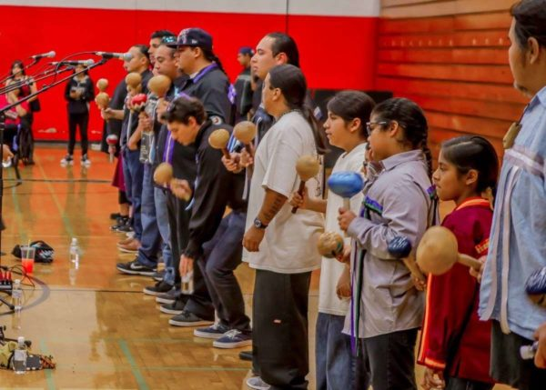
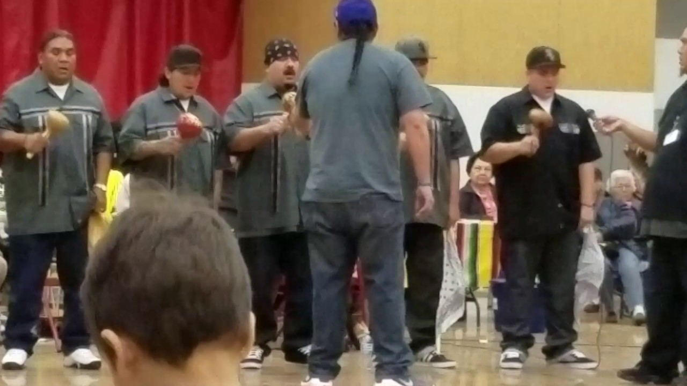
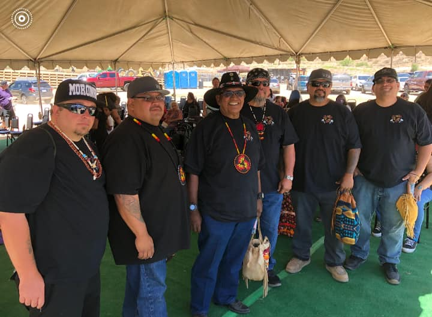
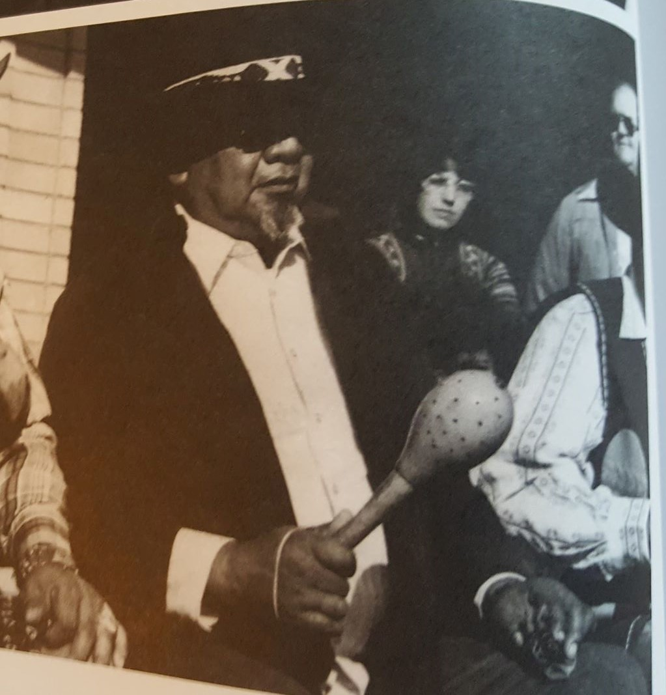

Miyaxwe, ne netew Mario Lario Chutnicut , net hen Pachawal Pa, Kupaanxga , Wilakal Pa, Umun Nemingkem !
My name is Mario Lario Castellano, I'm from the "Place where they leach acorns village", Kupa Village",and "buckwheat Vilage", all my relations!
I am an enrolled tribal member from the Los Coyotes Band of Cahuilla/Cupeno Indians. I created this page to share my culture with everyone.
This is my Cahuilla page! Thank you for taking the time to visit. This is an informational website, with a lot of info to educate about Cahuilla culture.
Feel free to use this page to teach. Knowledge is power. A'ho !
|  |  |  |  |
|---|---|---|---|